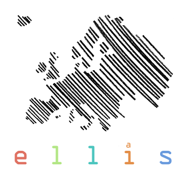

ICML 2026
RAIGen: Rare Attribute Identification in Text-to-Image Generative Models
1 CVSSP, University of Surrey |
2 University of California |
3 Pioneer Centre for AI, University of Copenhagen |
4 Institute for People-Centred AI, University of Surrey
